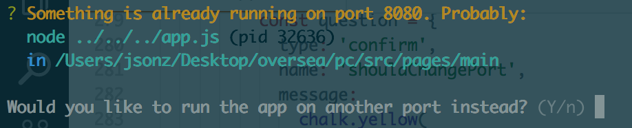
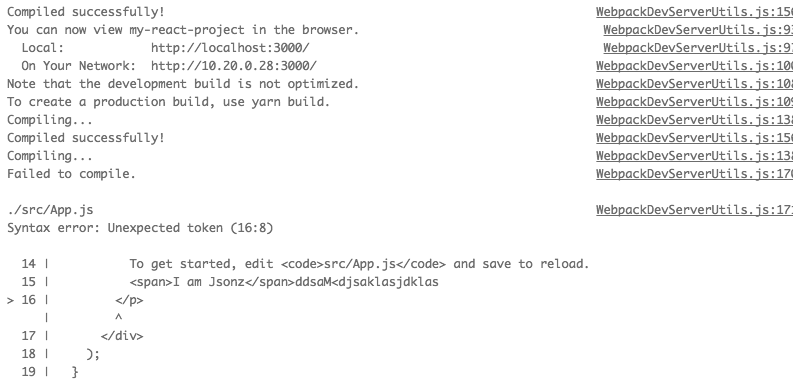

上一篇我们已经讲了 create-react-app里面创建package.json安装依赖并且拷贝可运行的demo等步骤。传送门
这一篇我们来讲一下 create-react-app里面的启动服务等部分，就是平时我们安装完依赖之后，启动开发服务:npm start。这一块涉及到太多关于webpack与配置的东西，加上第一篇觉得描述的太过冗余~所以这篇不会讲得很细，只是大概把他运转的逻辑思路写出来，具体源码会提供传送门。
推荐大家看第一篇的 项目初始化 和 断点调试 部分，这里就不在赘述。传送门 项目初始化断点调试部分
准备阶段
这里我们讨论的create-react-app版本依旧是v1.1.4
既然这篇我们主要讲的是 create-react-app里面的webpack服务，那我们肯定要先新建一个项目。
npm install create-react-app -g全局安装create-react-appcreate-react-app my-react-project用create-react-app新建一个项目
1 | cd my-react-project |
新建完之后，终端提示了我们直接进入项目，跑 yarn(npm) start 就可以开发了。我们打开 package.json就可以看到 yarn start 跑的命令是 "react-scripts start"
那么这个 react-scripts 命令到底是哪一个呢？
一般写在 package.json=> scripts 的命令，都会先去 project_path(项目目录）/node_modules/.bin 查找，找不到再找全局安装的包。
那么 node_modules/.bin 里面的文件又是怎么来的呢？
我们如果在包的 package.json 加上 bin 字段，npm就会自动帮我们映射到 node_modules/.bin 里面 npm bin文档传送门
我们直接打开 node_modules/react-scripts/package.json 能看到这么一行"react-scripts": "./bin/react-scripts.js",直接把命令指向node_modules/react-scripts/.bin/react-scripts.js，也验证了我们的观点。
还记得上一篇，我们在 create-react-app/packages 里面发现了有一个 react-scripts。其实是同一个东西来的，那么接下来的步骤就很明确了，直接用老办法，改下配置，然后用vscode跑断点调试阅读project_path/node_modules/react-scripts/.bin/react-scripts.js的源码 一探究竟。
vscode launch.json
这里我们传入 start 作为参数,模拟在项目里跑 yarn start 的效果。1
2
3
4
5
6
7
8
9
10
11
12
13
14{
"version": "0.2.0",
"configurations": [
{
"type": "node",
"request": "launch",
"name": "启动程序",
"program": "${workspaceFolder}/node_modules/react-scripts/bin/react-scripts.js", //调试的文件路径
"args": [
"start" // 传入 start 做为参数
]
}
]
}
ps:下面的react-scripts没有特殊说明，都代表project_path/node_modules/react-scripts目录方便阅读
react-scripts/.bin/react-scripts.js
文件传送门
这里我们还是老办法，先不看依赖 看主流程理解先，我们能看到这个文件也是一个入口文件，非常简短。
1 | const args = process.argv.slice(2); |
首先处理传进来的参数，用script变量来获取我们跑的命令是哪一个，有[‘build’, ‘eject’, ‘start’, ‘test’]这么几种，分别对应 构建、暴露配置、开发、测试命令。
然后再获取一起传入的其他的参数，比如npm test命令就会带一个额外的参数--env=jsdom。
1 | switch (script) { |
然后根据获取到的命令，对应到react-scripts/scripts下面的文件去跑，比如 react-scripts start 就会去跑 react-scripts/scripts/start.js。
这里插几句讲一下一个项目上比较常见的类库解耦方式，我们可以看到这里的 spawn引用的是react-dev-utils/crossSpawn。而在react-dev-utils/corssSpawn里面也只是简简单单的几句，引入cross-spawn再把cross-spawn暴露出去。
但是这么写就可以起到类库解耦的作用，比如以后这个库被爆出有重大的bug或者停止维护了，直接修改这个文件引入其他的类库，其他引用该文件的代码就不需要改动。
1 | // react-dev-utils/corssSpawn |
react-scripts/scripts/start.js
看过第一篇的人对这个文件夹应该不陌生，create-react-app 在安装完 react 等依赖之后，就会跑这个文件夹下面的init.js来拷贝模版文件，修改package.json等操作。
既然我们已经知道他要执行 start.js, 接下来我们把vscode调试文件修改为 start.js 文件"program": "${workspaceFolder}/node_modules/react-scripts/scripts/start.js", 之所以要修改是因为他这里不是引用js文件来运行，而是用终端来跑，所以不属于我们的项目调试范围~
1 | process.env.BABEL_ENV = 'development'; |
文件的最开头设置了两个环境变量，因为 start 是用来跑开发的，所以这里的环境变量都是 development，然后再给 process 绑定一个错误监听函数，这个错误监听实质上是用来监听 一些没有被.catch的Promise。 具体可以看node的文档, 关于 Promise可以看一下之前写过的一篇介绍Promise的文章从用法和实现原理都有所涉及
接着引进一个 ../config/env， 看文件名猜应该是做一些关于环境配置的事情，找到文件断点进来
react-scripts/config/env.js
1 | const fs = require('fs'); |
env.js 文件在引入 ./paths.js 之后，立即把他从cache中删除掉，这样下次如果有其他的模块引入paths.js，就不会从缓存里面去获取，保证了paths.js里面执行逻辑都会用到最新的环境变量。
1 | var dotenvFiles = [ |
然后再根据paths给出的地址去拿其他的环境变量，这里paths.js会根据不同的情况给出不同的路径，我们讨论的是正常的创建项目情况。
其他的几种情况有：
- 我们在已经创建的项目跑了
npm(yarn) eject，这时候react-scripts会把配置都暴露到project_path/config方便我们去根据项目修改配置，这个操作是不可逆的。 - 我们正常创建项目，直接跑项目，这时候配置就存放在
project/node_modules/react-scripts。 - 开发人员自己调试用的，这时候配置存放在
create-react/packages/react-scripts/config。
拼装完路径之后，用dotenv-expand和dotenv来把文件里面的环境变量加载进来，这一块一般场景用不上。
1 | function getClientEnvironment(publicUrl) { |
然后返回一个 getClientEnvironment函数，这个函数执行后会返回客户端的环境变量。
react-scripts/scripts/start.js(2)
1 | const fs = require('fs'); |
加载完各种环境变量之后，我们回到react-scripts/scripts/start.js，老规矩，一系列的依赖先跳过不看，后面用到再来看。
还记得我们在env.js里面delet掉node.catch吗，这里conts paths = require('../config/paths)就不会从缓存里面去拿而是重新去加载。
1 | if (!checkRequiredFiles([paths.appHtml, paths.appIndexJs])) { |
先判断一下我们两个入口文件有没有存在，分别是project_path/public/index.html和project_path/src/index.js，如果不存在给出提示结束程序。
1 | const DEFAULT_PORT = parseInt(process.env.PORT, 10) || 3000; |
然后设置默认的端口和host，如果有特殊的需求，可以从环境变量传进去改变，没有就会用默认的3000端口。
1 | choosePort(HOST, DEFAULT_PORT).then(...) // @return Promise |
设置完默认的端口与host之后，开始判断这个端口有没有被其他的进程占用，有的话会提供下一个可用的端口，我们顺着choosePort去文件头找依赖，找到该方法位于依赖react-dev-utils/WebpackDevServerUtils。
1 | function choosePort(host, defaultPort) { |
choosePort 里面用到detect-port-alt去检测端口占用，如果被占用了返回一个最接近的递增方向可用的端口，比如3000端口被占用,3001没被占用就返回回来。
如果发现返回的可用端口不是默认的端口，给出一个交互式的命令询问用户是否要换一个端口去访问，交互式命令用的是inquirer这个包。
这里如果用vsCode来调试，process.stdout.isTTY 返回的值是undefined。所以如果要测试这一块交互式命令，只能切回系统的终端去调试~

文件传送门
检测完可用端口之后，回到start.js。
前端处理一堆环境变量，还有加载一堆配置，全都用在这一块。这里主要做的就是把环境变量和配置组装起来，开个webpack本地调试服务。主要做的事情有:
- 如果没有找到可用的端口直接返回不继续执行下去
- 根据环境变量判断是否启用
https，默认是http。 - 根据 host, protocol, port 拼装一系列的url，包括
Browser的url与Terminal的url。 - 调用
createCompiler传入webpack，webpack配置，appName，第三步获取的url，还有是否使用Yarn等参数，生成一个 webpackCompiler。createCompiler负责的东西有:
4.1 根据环境变量判断是否有冒烟测试的需求，如果有加一个handleCompile，一有错误就中断程序。
4.2 用传进来的配置和handleCompile生成一个webpackCompiler
4.2 增加invalid钩子，一检测到更改文件，而且是交互式终端的话，先清空控制台，再输出日志
4.3 增加done钩子，对webpack的输出日志整理统一输出 - 创建开发服务配置 具体的配置代码放在
webpackDevServer.config.js - 把4和5丢给
WebpackDevServer，生成一个 webpack 本地开发服务 - 大功告成，清除屏幕，打开调试连接
相关的代码执行写到注释里面去了，没办法每个方法配置都拎出来讲…不然篇幅会很长，这里面很多点一讲都可以是一个知识点。1
2
3
4
5
6
7
8
9
10
11
12
13
14
15
16
17
18
19
20
21
22
23
24
25
26
27
28
29
30
31
32choosePort(HOST, DEFAULT_PORT)
.then(port => {
// 没有找到可用端口，直接return
if (port == null) {
return;
}
// 根据环境变量判断是否要用https
const protocol = process.env.HTTPS === 'true' ? 'https' : 'http';
const appName = require(paths.appPackageJson).name;
// 获取当前的 host, port, protocol 生成一系列url
const urls = prepareUrls(protocol, HOST, port);
// 创建一个webpack compiler
const compiler = createCompiler(webpack, config, appName, urls, useYarn);
// 加载代理的配置，在 project_path/package.json 里面加载配置
const proxySetting = require(paths.appPackageJson).proxy;
const proxyConfig = prepareProxy(proxySetting, paths.appPublic);
// 生成 webpack dev server 的配置
const serverConfig = createDevServerConfig(
proxyConfig,
urls.lanUrlForConfig
);
const devServer = new WebpackDevServer(compiler, serverConfig);
// 监听 devServer
devServer.listen(port, HOST, err => {
// 一些日志输出
// 自动用默认浏览器打开调试链接
openBrowser(urls.localUrlForBrowser);
});
})
.catch(err => {
// 错误处理
});
react-dev-utils/WebpackDevServerUtils.js1
2
3
4
5
6
7
8
9
10
11
12
13
14
15
16
17
18
19
20
21
22
23
24
25function createCompiler(webpack, config, appName, urls, useYarn) {
let compiler;
try {
compiler = webpack(config, handleCompile); // handleCompile为冒烟测试的对应处理
} catch (err) {
// 错误提示
}
compiler.plugin('invalid', () => {
// invalid 钩子，如果当前处于TTY终端，那么先清除控制台再输出 Compiling...
if (isInteractive) {
clearConsole();
}
console.log('Compiling...');
});
let isFirstCompile = true;
compiler.plugin('done', stats => {
// 监听了 done 事件，对输出的日志做了格式化输出
// 正常情况下会直接输出 `Compiled successfully!`
// 如果有错误则输出错误信息，这里对错误信息做一些处理，让其输出比较友好
});
return compiler;
}

最后讲两句
之前就一直好奇，这些脚手架是怎么清空我们的终端屏幕的。在看create-react-app的时候，瞄到有这么一个文件react-dev-utils/clearConsole.js。这个文件十分剪短，核心代码就那么一句:
react-dev-utils/clearConsole.js
1 | process.stdout.write(process.platform === 'win32' ? '\x1B[2J\x1B[0f' : '\x1B[2J\x1B[3J\x1B[H'); |
然后好奇心特别重，不知道后面两串是什么意思，一直搜没有找到想要的答案。问了身边的同事，说是十六进制，而在我狭隘的认知里面一直以为十六进制只能转成数字….但是定睛一看，这有个J 明显不是十六进制。一个女装大佬和我说这是ASCII码，百度了一下ASCII码，看了 \x1B ASCII对应到 ESC。 但是后面的 [2J [3J [H 是什么意思还是不清楚…
后面大佬又和我说找到可能是 Linux ANSI 控制码 找来找去折腾了挺久的后面才揭开神秘面纱~
这几个命令大概的意思是:[2J 清除控制台[H 将光标移至最顶部[3J还是没有找到，应该是更高级的系统层级的清除控制台
给出几个 Linux ANSI 控制码资料网站
Ubuntu Manpage: 控制终端代码 - Linux 控制终端转义和控制序列
控制终端代码 - Linux 控制终端转义和控制序列(转) - 木瓜脑袋 - 博客园
最后前端的小伙伴很多和我一样不是科班出身的，真的得加把劲补补一些计算机比较原理性或比较接近系统层级的知识~